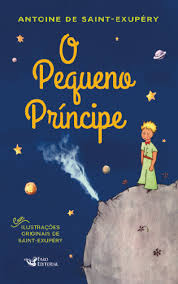
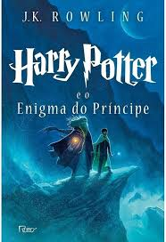
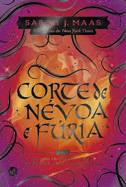
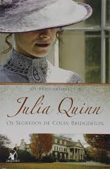
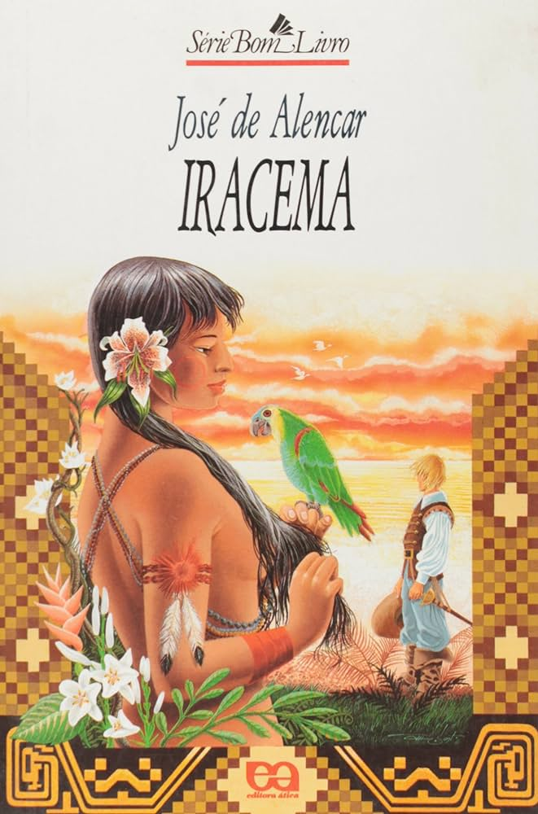

Catálogo
 O pequeno principe
O Pequeno Príncipe conta a história de um aviador que cai em meio à imensidão do Deserto do Saara e conhece, inesperadamente, um menino de cabelos dourados como trigo, vestido com um manto verde e vermelho e portando uma pequena espada.
R$ 28,99
 Harry Potter e o Enigma do príncipe
Harry, que acabou de completar 16 anos, parte rumo ao sexto ano na Escola de Magia e Bruxaria de Hogwarts, animado e ao mesmo tempo apreensivo com a perspectiva de ter aulas particulares com o professor Dumbledore, o diretor da escola e o bruxo mais respeitado em toda comunidade mágica.
R$ 23,68
Alma Ferida, Alma Curada.
LIVRO ALMA FERIDA, ALMA CURADA PADRE REGINALDO MANZOTTI Sente que perdeu o sentido da vida, sofre com uma realidade familiar e conjugal conturbada, padece de traumas emocionais ou sente-se abandonado e culpado, não perca as esperanças.
R$ 31,90
 Corte de névoa e fúria
A jovem humana Feyre assume seu lugar como Quebradora da Maldição e dona dos poderes de sete Grão-Feéricos. Seu coração, no entanto, permanece humano. Nesse livro, a acompanhamos numa jornada de redescobrimento.
R$ 54,67
 Os segredos de Colin Bridgerton
Em Os segredos de Colin Bridgerton, quarto livro da série que já vendeu mais de 15 milhões de exemplares, Julia Quinn constrói uma linda história que prova que de uma longa amizade pode nascer o amor mais profundo. Penelope Featherington frequenta a casa dos Bridgertons há muitos anos.
R$ 44, 92
Vidas Secas
A história de uma família pobre da região seca do Nordeste e sua luta diária por trabalho e comida para sobreviver e superar as dificuldades do ambiente árido em que vive. Baseado no livro homônimo de Graciliano Ramos.
R$ 40,02
After 4 - depois da esperança
Tessa é uma garota certinha que deixa a casa da mãe e a vida pacata para fazer faculdade. Quando se envolve com Hardin, um jovem rude, tatuado e com piercings, a jovem vê sua sexualidade aflorar. Depois dele, ela nunca mais será a mesma.
R$ 54,25
 Iracema
O romance conta o amor de um branco, Martim Soares Moreno, pela índia Iracema, a virgem dos lábios de mel. A relação do casal serviria de alegoria para a formação da nação brasileira. A índia Iracema representaria a natureza virgem e a inocência enquanto o colonizador Martim representa a cultura (europeia).
R$ 20,22
Bíblia Sagrada
A Bíblia é um livro sagrado que contém a palavra de Deus. Ela prediz a vinda de Jesus Cristo e descreve Sua vida, Sua missão e Seu papel sagrado como o Filho de Deus e Salvador do mundo.
R$ 92,99
Bíblia Sagrada
A Bíblia é um livro sagrado que contém a palavra de Deus. Ela prediz a vinda de Jesus Cristo e descreve Sua vida, Sua missão e Seu papel sagrado como o Filho de Deus e Salvador do mundo.
R$ 92,99
Memórias de um Sargento de Milícias
O romance gira em torno da vida de Leonardo, um menino travesso e malandro que entre tantas ações se torna um sargento: O Sargento de Milícias. A história tem como espaço a cidade do Rio de Janeiro. Ainda pequeno, ele foi entregue aos cuidados dos padrinhos, um barbeiro e uma parteira.
23,99